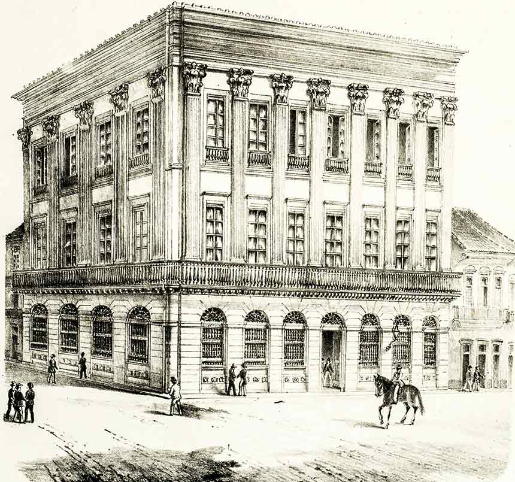

Década de 1850
Lei Eusébio de Queirós
A Lei Eusébio de Queirós, promulgada em 4 de setembro de 1850, foi uma legislação fundamental do Império do Brasil que visava combater o tráfico de escravizados. A lei recebeu esse nome em homenagem ao então ministro da Justiça, Eusébio de Queirós, que a propôs. Ela proibiu oficialmente a importação de escravizados provenientes de países africanos, marcando um importante passo na pressão internacional contra a escravidão, especialmente por parte do Reino Unido, que já havia abolido o tráfico de escravizados em suas colônias e fazia fortes pressões para que o Brasil seguisse o mesmo caminho. A lei estabeleceu penalidades severas para quem fosse pego praticando o tráfico, incluindo a apreensão dos navios envolvidos e punições para os traficantes. Embora a lei tenha sido um marco legal no enfraquecimento do tráfico negreiro, ela não extinguiu a escravidão no Brasil, que continuou até 1888, mas teve um impacto significativo na diminuição da prática de importação de escravizados.

Novo Banco do Brasil
O Novo Banco do Brasil, fundado em 1853, foi criado durante o reinado de Dom Pedro II para fortalecer a economia do Império do Brasil. Sua principal função era emitir a moeda circulante e fornecer crédito ao governo e à iniciativa privada, estimulando o comércio e a indústria, especialmente o setor cafeeiro, em expansão na época. A criação do banco também buscava ajudar no financiamento da dívida pública e na estabilidade econômica. O Novo Banco do Brasil teve um papel importante na modernização do sistema financeiro do país. Apesar de enfrentar dificuldades e crises financeiras ao longo do tempo, ele foi um marco no desenvolvimento das finanças brasileiras, continuando a operar após a Proclamação da República, com ajustes em sua estrutura.